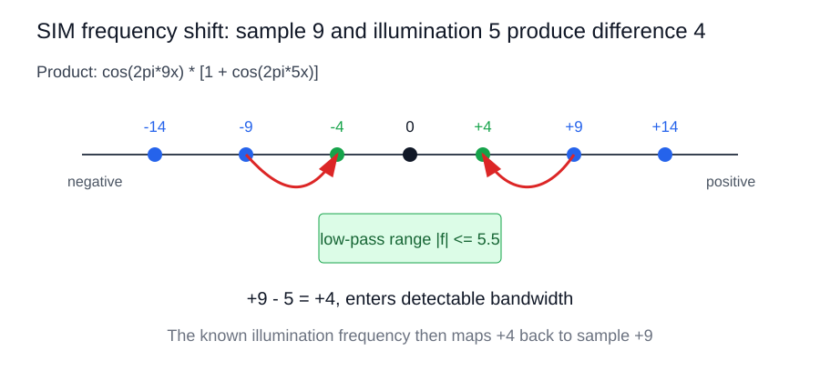

SIM 基础与频谱直觉
知识库目录 · 项目总览 · 文献目录
阅读目标：先理解空间频率、OTF、摩尔纹和负频率，再阅读严格的前向模型。
依据：S1（SIM 综述）；H（由傅里叶变换与三角恒等式展开的解释）。详见来源编号与证据约定。
整理：2026-09-26；文中实验数字保留原有文献条件，工程建议不视为已验证结论。
本页目录
1. 一句话理解 SIM
普通荧光显微镜可近似看作一个低通系统，只能通过样品空间频率中位于 OTF 支撑域内的部分。SIM 用已知的周期性照明把样品的高频信息搬移到 OTF 内，再通过多幅不同相位/方向的观测把这些频带分离并搬回原位置。
因此，SIM 的核心不是“后处理锐化”，而是：
illumination encoding→frequency shifting→model inversion.
深度学习可以帮助估计参数、抑制噪声、加速反演或建模残差，但如果网络产生的细节不受观测模型约束，就可能是统计幻觉而不是被测样品结构。
1.1. 与超分辨目标的关系
横向分辨率的经典尺度可写成
dxy≈2NAλ,
轴向分辨率通常更差，数量级可写为
dz≈NA2nλ
具体常数随相干性、检测方式和定义而变。SIM 通过频谱搬移把有效截止频率推向更高频率。理想线性 2D-SIM 的扩展上限约为传统宽场的 2 倍；真实结果还受 OTF、照明调制度、噪声、像差、采样和重建正则化影响。
2. 图像不是二值亮暗，而是连续强度场
显微镜相机记录的不是“亮/暗标签”，而是每个像素上的光子数或电子数。可将样品表示为非负的连续强度函数：
s(x,y)∈R≥0.
一次 raw 采集得到的也是灰度强度矩阵。理想化的一维例子可以写为
s(x)=A+Bcos(2πfxx),
其中 fx 是空间频率，单位为 cycles/μm。若结构周期为 T，则
fx=T1.
因此宽条纹（周期长）是低频，细密条纹（周期短）是高频；均匀背景对应 fx=0 的直流分量。真实样品通常由许多频率共同组成：
s(x)=k∑S(k)ei2πkx.
低频决定大尺度轮廓，高频决定边缘、细丝和小颗粒等细节。显微镜滤掉高频后，物体通常表现为边缘变钝、相邻结构粘连，而不是简单地变成黑色。
3. 普通显微镜是受 OTF 限制的低通系统
普通荧光显微镜的空间域模型为
y(r)=s(r)∗h(r)+n(r).
傅里叶变换后：
Y(k)=S(k)H(k)+N(k).
当某个频率超出 OTF 支撑域时，H(k)≈0，该频率的样品信息就无法被可靠传递。横向分辨率的数量级可写成
dxy≈2NAλ.
这里的 OTF 像一个“频率闸门”：低频可以通过，高频逐渐衰减，超过截止频率后几乎不再传递。需要注意，光学截止频率和相机采样的奈奎斯特频率是两道不同的限制：
fN=2fsampling.
超出 fN 的频率可能发生采样混叠，折叠成错误的低频，因此实验中还必须满足足够的像素采样。
4. 摩尔条纹与“频率搬移”
两组相近频率的条纹叠加，会产生一个低频包络。由积化和差公式：
cos(2πf1x)+cos(2πf2x)=2cos(2π2f1−f2x)cos(2π2f1+f2x).
快速项的频率约为 (f1+f2)/2，慢速包络的频率约为 ∣f1−f2∣/2。肉眼看见的宽条纹主要来自这个低频包络。
SIM 有意利用相同的“混频”机制，但使用的是乘法。设样品中有一个高频分量
s(x)=cos(2πfsx),
结构光为
I(x)=1+mcos(2πfix+ϕ),
则
s(x)I(x)=cos(2πfsx)+2mcos(2π(fs−fi)x−ϕ)+2mcos(2π(fs+fi)x+ϕ).
因此样品频率 fs 产生三个频率：
fs,fs−fi,fs+fi.
对应的频率轴示意如下：

例如 fs=9、fi=5，会产生 (9,4,14)。如果显微镜只能通过 ∣f∣≤5.5，则差频 4 落入可探测范围；9 和 14 仍在光学带宽之外。SIM 根据已知的 fi 把测到的差频再搬回 9 的位置。
4.1. 包络是什么：快载波外面的慢变化
包络不是另一条独立的细条纹，而是描述“快速振荡的振幅在空间上如何缓慢变化”的函数。设两组接近频率的余弦为
x1(x)=cos(2πf1x),x2(x)=cos(2πf2x).
由积化和差公式：
x1(x)+x2(x)=2cos(2π2f1−f2x)cos(2π2f1+f2x).
定义
fenv=2∣f1−f2∣,fcar=2f1+f2,
则第一个因子是慢变化的包络，第二个因子是快速载波。包络的幅度为
Aenv(x)=2∣cos(2πfenvx)∣.
例如 f1=18、f2=22 时，载波频率为 20，包络的有符号频率为 2。两组条纹自身都很细，但它们的相对位置会缓慢地“对齐—错开—再对齐”：
两条纹对齐 -> 亮度增强
亮线遇到暗线 -> 亮度减弱
再次对齐 -> 亮度增强
因此肉眼看到的宽明暗带就是包络。包络的周期由频率差决定：频率越接近，包络变化越慢、明暗带越宽；频率差越大，包络变化越快、明暗带越窄。
包络会改变局部对比度，并可能产生可见的摩尔条纹或拍频。当采样系统只能看到包络而看不见载波时，包络可能伪装成低频结构。SIM 把这种混频设计成可逆过程：样品频率 fs 与照明频率 fi 相乘后产生
fs−fi,fs+fi.
差频 fs−fi 可能进入 OTF 带宽，和频 fs+fi 通常落在带宽外。只要照明频率、相位和 OTF 已知，就能利用多相位观测把差频分量识别出来，再搬回样品原来的高频位置。若相位或波矢估计错误，包络的相位和位置会错，重建后常表现为条纹、重影、方向性伪影或频谱接缝。
5. 为什么会出现 S(k±ki)
正弦结构光在复指数形式下包含三个照明频率：
0,+ki,−ki.
其中
cos(2πki⋅r+ϕ)=21eiϕei2πki⋅r+21e−iϕe−i2πki⋅r.
样品频率 k 与 +ki 相乘后变为 k+ki，与 −ki 相乘后变为 k−ki。所以在相机检测位置 k 处，混合结果包含：
Dϕ(k)=I0H(k)[S(k)+2meiϕS(k−ki)+2me−iϕS(k+ki)]+N(k).
三个未知量是
X0=S(k)H(k),X−1=S(k−ki)H(k),X+1=S(k+ki)H(k).
它们是同一个检测频率位置上混合的三个样品频谱分量，并不是三个像素。
6. 负频率 S(−k) 的意义
负频率是傅里叶表示中的数学分量，不代表一种负的物理频率。实值图像满足共轭对称：
S(−k)=S∗(k),∣S(−k)∣=∣S(k)∣.
正负频率共同保证逆傅里叶变换得到实值图像。它在 SIM 中仍然必须解混，因为它会真实地参与相机信号。例如相机检测 k=2、结构光 ki=5 时：
(−3)+5=2,7−5=2.
所以 S(−3) 与 S(7) 都会混入检测位置 2：
Dϕ(2)=I0H(2)[S(2)+2meiϕS(−3)+2me−iϕS(7)].
若不解混，就无法判断某个亮度变化究竟来自低频 S(2)、负频率副本 S(−3)，还是真正的超分辨高频 S(7)，最终可能产生条纹、重影、振铃和频谱接缝伪影。
7. 相机看到的是空域，频域由 FFT 得到
相机直接记录的是空域灰度图 dj(x,y)。频域图像不是相机直接拍到的，而是对 raw 图像做二维离散傅里叶变换：
Dj(kx,ky)=F{dj(x,y)}.
实际显示时通常画频谱幅度的对数：
log(1+∣Dj(kx,ky)∣).
频域中心是低频，离中心越远代表越细的空间结构。竖直条纹在频域中会在水平方向出现 +f 和 (-f) 两个亮点；条纹越密，亮点离中心越远。SIM 软件的 FFT、频谱分离、频谱搬移和逆 FFT，正是把相机记录的空域强度转换为可操作的频谱地图，再将各频带拼回去。
可将流程画成：
相机 raw 空域图像 d_j(x,y)
|
| FFT
v
频域混合图 D_j(kx,ky)
|
| 多相位解混：分离 0、+1、-1 级
v
把副本搬回真实样品频率位置
|
| OTF/Wiener 加权融合
v
逆 FFT -> 重建空域图像 x_hat(x,y)
返回知识库目录 · 下一专题：统一成像模型与 SIM 分类